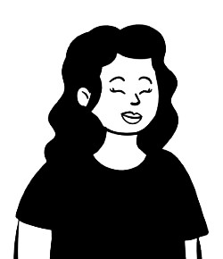

About Us
Ki to Open Data - Your Open Data Problem Solvers
Who are we?
William Inglis
GIS Applications Specialist
Will is McMaster graduate with a background in Philosophy and GIS. He is continuing his studies at Fleming College for an advanced diploma. He currently works as a Lifeguard and Swim Instructor at the YMCA!
Grace Kim
GIS Applications Specialist

Grace is currently studying GIS at Fleming College. She has a background in Honours Earth and Envrionmental Science and is currently working as a tutor and web app developer for an academy located in Toronto. During her free time, she likes to make pixel art and play boardgames!
Esther Kim
GIS Applications Specialist
Esther is a student at Fleming College for the GIS Application Specialist Program, learning about GIS for the first time. Throughout the program, her interest in data has grown.